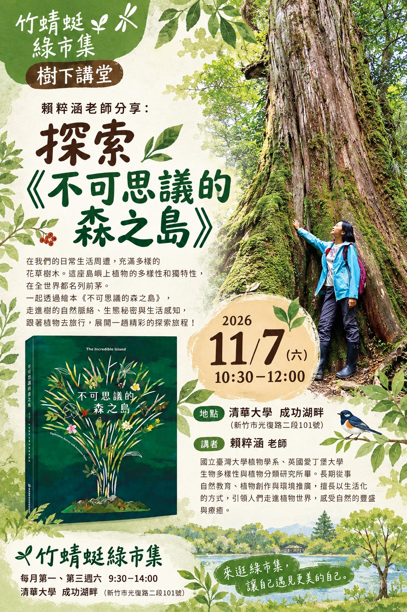

🌾在我們的日常生活周遭，充滿多樣的花草樹木，如果不特別提起，大家可能不知道，這座島嶼上植物的多樣性和獨特性，在全世界都名列前茅。
因為有如此豐饒的自然資源，去年（2025）臺灣終於出版了第一本以原生樹木為主題的科普繪本——《不可思議的森之島》，從「樹的自然脈絡」、「樹的生態秘密」、「樹的生活感知」三大主軸切入，涵蓋了自然史、樹木的各個面向、生態互動與人文應用。
在這場講座分享中，共同作者賴粹涵除了為大家導讀繪本，也分享書籍出版背後有趣的故事，並透過一些樹種的連結與五感體驗，帶領大家跟著植物去旅行，展開一趟精彩的探索旅程。
🌿活動內容
【時間】2026/11/7 (六) 10:30～12:00
【地點】新竹 清華大學 成功湖畔
【活動報名】自由入席
👩🏫講者介紹：
賴粹涵，國立臺灣大學植物學系、英國愛丁堡大學生物多樣性與植物分類研究所畢，曾任科博館科學教育組中英文解說員、公平貿易平台與綠色文創品牌負責人、靜宜大學通識課程兼任講師、英華語領隊導遊、園藝治療師、森林療癒引導員、環境教育教師、華德福學校教師、文化部文化體驗藝術入校計畫教學藝術家。
歷經國內外跨領域養成，致力實踐與推廣植感生活及綠色療癒，將多元文化、自然創作等多面向專長及興趣整合、融入創作及教學中。擅長以藍曬、自然纖維及其他媒材轉譯自然的語彙，呈現植物的多樣性與無限可能，並藉由生活化的創作、教學與商品研發讓植物與日常融合，拉近人們與大自然的距離。
📗參考資料：
《不可思議的森之島》臺灣原生樹木繪本介紹，可參考 https://e-info.org.tw/node/241174